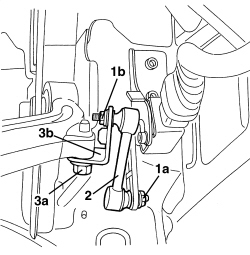

5540C44 BAR FOR FRONT SENSOR FOR CORRECTING/ALIGNING GAS DISCHARGE LIGHTING UNITS R R
- Path
- Procedures > 55 ELECTRICAL EQUIPMENT > 5540 EXTERIOR LIGHTING > 5540C HEADLAMP/LIGHT CLUSTER ALIGNMENT CORRECTION DEVICES > 5540C44 BAR FOR FRONT SENSOR FOR CORRECTING/ALIGNING GAS DISCHARGE LIGHTING UNITS R R
- Kind
- repair procedure (removal / refitting; the operation number is the code)
- Applies to
- all engines; all production periods
- Interactive page
- https://sloeber94.github.io/elrnDB-aBrrSpdr/en/#/946002406
Applies to: all engines; all production periods
 Removing
Removing
 Refitting
RefittingOp. 4450B02 LEFT FRONT WHEEL - R.R
Op. 7055B90 LEFT FRONT WHEEL ARCH LINER - R.R.
1. Undo rod connection nuts (1a) and (1b).
2. Remove the connecting rod.
3. If necessary, undo the bolt (3a) and remove the connecting rod support (3b).

Applies to: all engines; all production periods
Refitting
Removing- Check that the connecting rod is not damaged.
- If removed, position the connecting rod support and tighten the bolt.
- Fit the connecting rod in the housing.
- Tighten the rod connection nuts.